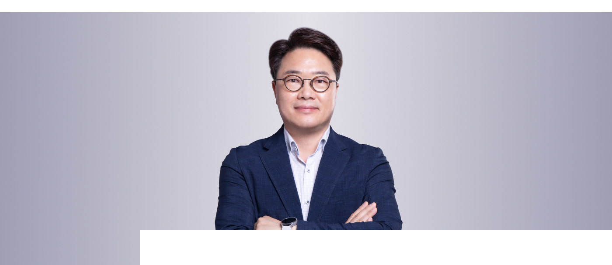
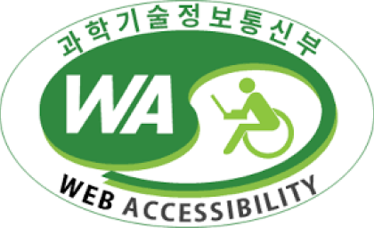

CEO 인사말
- HOME
- 회사소개
- CEO 인사말
전종민
오픈핸즈 대표이사

오픈핸즈 홈페이지를 방문해 주셔서 감사합니다.
오픈핸즈㈜는 더 나은 일자리를 제공하며 기업의 사회적 책임을 다하기 위해
삼성 SDS가 설립한 자회사형 표준사업장입니다.
삼성 SDS가 설립한 자회사형 표준사업장입니다.
주 고객인 삼성SDS 업의 특성에 맞는 IT직무를 특화하고 지속 개발하여
60% 가까운 임직원이 IT직무를 수행하고 있습니다.
이를 위해 개인별 역량 강화 및 자기계발을 적극 지원하고 있으며, 경쟁력을 작춘 전문 인력을 양성하여
고객에게 최고의 기술과 서비스를 제공하기 위해 최선을 다하고 있습니다.
“열린 마음으로 더 나은 세상을 만들어 갑니다”라는 회사 슬로건에 맞게
더 나은 미래를 꿈꾸는 사람들을 위한 일자리를 만들고 서로 함께 성장하며 지속 경영 가능한
회사가 될 수 있도록 노력하겠습니다.
서로 배려하고 마음을 나누며 다양한 가치가 존중받는 신바람 나는 행복한 일터를 만들겠습니다.
더불어 오픈핸즈 임직원 모두 국내 외 법규를 철저히 준수하며 기업의 사회적 책임을 다하겠습니다.
이를 실현하기 위해 현장 진단 및 상시 모니터링 체계 구축 등
윤리, 준법 경영환경이 정착되도록 노력하겠습니다.
오픈핸즈에 많은 관심과 응원을 부탁드립니다.
오픈핸즈 홈페이지
웹접근성 품질 인증 마크 인증
웹접근성 품질 인증 마크 인증
장애인을 비롯한 모든 이용자들의 웹접근성을 높이기 위해 방송통신위원회의 한국형 웹콘텐츠 웹접근성 지침 2.1을 준수하였습니다.

- 01. 이미지를 인식하기 어렵거나 웹 접속 환경이 불안정한 이용자를 위해, 모든 이미지에 대체 텍스트를 삽입하였습니다.
- 02. 마우스 사용이 불편한 장애이들을 위해, 키보드만으로 홈페이지 이용이 가능합니다.
- 03.시각장애인용 ‘스크린리더기’가 원활하게 작동할 수 있도록,홈페이지에 플래시를 사용하지 않았습니다.
- 04. 홈페이지 이용을 보조하는 소프트웨어를 사용하는 이용자를 위해, 콘텐츠의 자동실행을 제한하였습니다.